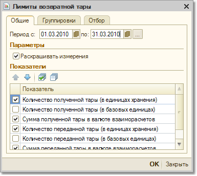

Отчет "Ведомость по возвратной таре" предназначен для контроля лимитов возвратной тары, которые назначены поставщику и покупателю.

Информация о количестве возвратной тары может выводиться в базовых единицах измерения, в единицах хранения остатков или в единицах для отчетов.
В отчете можно также вывести информацию об оценочной стоимости возвратной тары. Информация об оценочной стоимости возвратной тары выводится в валюте взаиморасчетов, установленной в договоре с контрагентом. Информацию в отчете можно группировать в разрезе контрагентов и договоров.
С помощью установленных параметров отбора можно отобрать информацию о лимитах возвратной тары в рамках договора с контрагентом, группы контрагентов, а также произвольного списка контрагентов и договоров.
Возвратной тарой является та тара, информация о которой заполняется в документах на отдельной закладке "Тара". Информация о ее движении и будет отображаться в отчетах.
В таблице сформированного отчета имеются следующие графы: